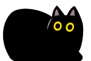

個人制作
課題：キャッチコピー・画像制作（2025年12月）
| 課題内容 | 「海外スイーツお取り寄せ」企画のキャッチコピーと画像の制作 |
|---|---|
| 使用ツール | Photoshop |
| 製作時間 | キャッチコピー考案・画像制作 計5時間 |
| コメント | Photoshopの操作を習い、初めて取り組んだ課題です。 教本と睨みあい、フォント選びや加工の方法など苦戦しながら なんとか提出しました。 |
課題：バナー制作（2025年12月）
| 課題内容 | 女性コスメバナー制作 |
|---|---|
| 使用ツール | Photoshop |
| 製作時間 | 7時間 |
| コメント | 広告用バナー制作という課題で、クライアントからの盛り込んでほしい 情報を漏れなくおさめることに苦労しました。 価格や購入ボタンの加工などにも挑戦し、形にすることができました。 |
課題：個人制作サイトのロゴ（2025年12月）
| 課題内容 | 個人制作サイト「Premium Bath」の店舗ロゴ |
|---|---|
| 使用ツール | Illustrator |
| 製作時間 | 4時間 |
| コメント | クライアントの要望に「お風呂やお風呂用品をモチーフにしたもの」 「いずれポイントカードやシールにも使用したい」というものがあったので マークは石鹸をイメージし、使いやすいように単色でデザインしました。 ロゴタイプは販売ターゲットの20～40代女性に似合う柔らかなフォントを使用し シャボンの泡感を出すべく少し手を加えました。 |